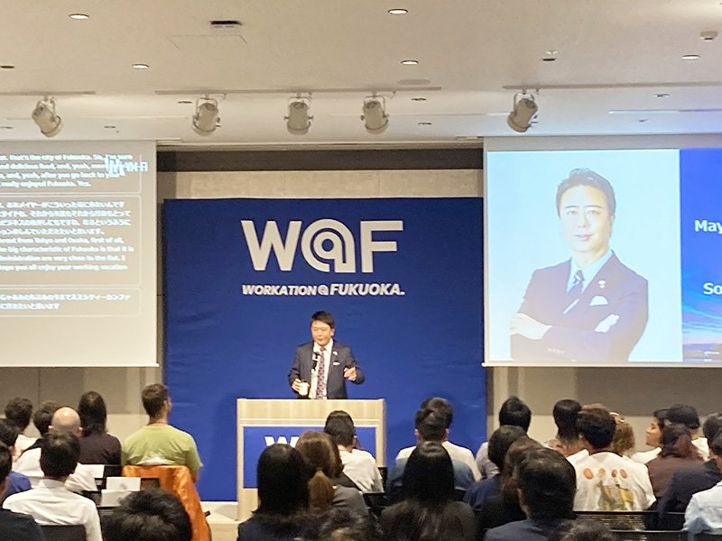
World Workation Conference in 福岡
福岡市主催の国際カンファレンスで、福岡市長スピーチを含む複数セッションにFelo Subtitleを採用。高精度なAI同時通訳字幕により、海外ゲストとの双方向コミュニケーションを実現しました。会議での活用実績が評価され、現在は福岡空港・博多駅の観光案内所にもFelo Translatorを展開し、訪日観光客対応にも活用されています(株式会社QTnet経由で提供)。
詳しく見る →同時通訳コストを最大80%削減。専門用語にも対応するAIリアルタイム字幕で、英語が話せなくても世界中の参加者とその場で議論できる。
通訳者1日10〜20万円、
年間数百万円の予算負担
英語以外の参加者が
議論に加われない
多言語議事録の作成に
数時間〜半日かかる
機密会議でボット参加を
避けたいシーンがある
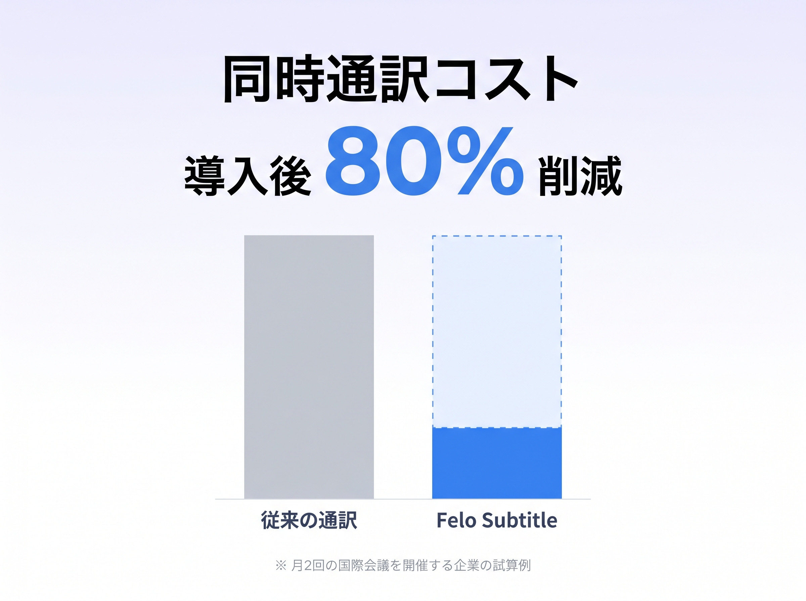
通訳者の手配・待機コストがゼロに。定額サブスクリプションで回数制限なく利用でき、複数言語の同時字幕表示にも追加費用はかかりません。月2回の国際会議なら、従来の同時通訳コスト比で年間180万円以上の削減が可能です。
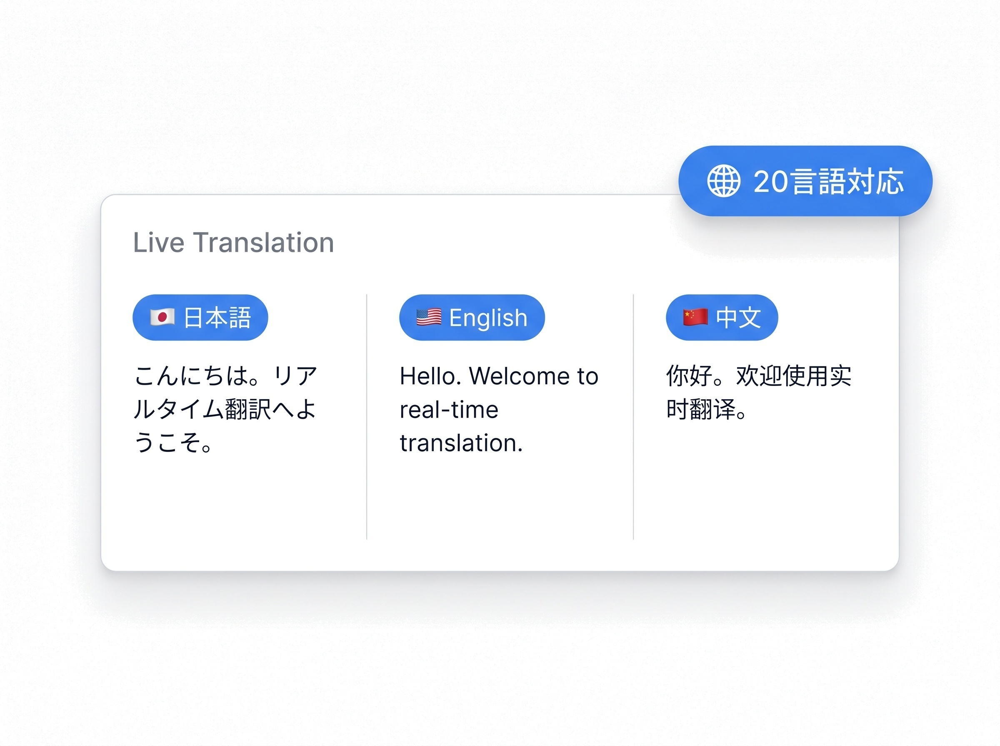
エンタープライズグレードの音声認識AIと最新LLMを組み合わせた独自のハイブリッド構成で、日英中韓露独仏西など20言語を自動認識。「逐語訳」＋「修正翻訳」の2段階処理で同時通訳レベルの精度を実現し、医療・法律・IT・製造など業界特有の専門用語にも対応します。
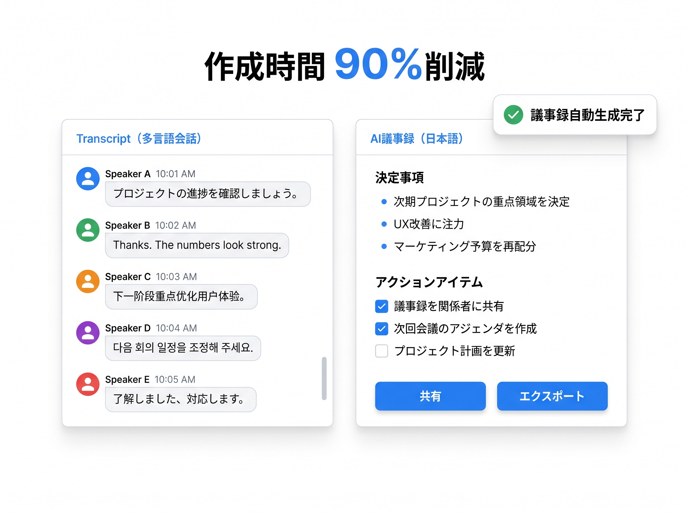
LLMによる話者識別・要約機能で、誰が何を言ったかを自動整理。客観的な会議要約・タスク抽出にも対応し、会議終了と同時に正確な議事録を多言語で共有できます。
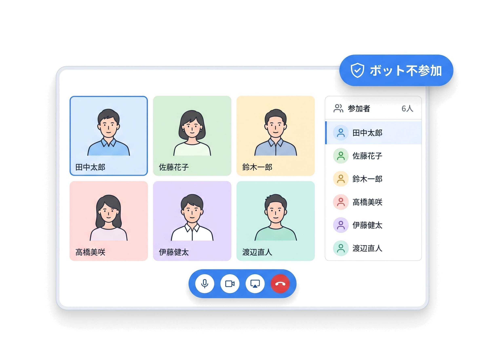
デスクトップ音声を直接キャプチャする独自技術で、会議にボットを参加させる必要がありません。参加者リストに不明なアカウントが表示されないため、経営会議やM&A協議など機密会議でも安心して利用できます。
エンタープライズグレードの音声認識AIをベースに、最新の大規模言語モデル（LLM）で文脈補正を実施。安定性と最新AI精度を両立した独自の2段構成で、ノイズの多い会場音声やアクセントのばらつきにも強い認識率を実現します。
会話の流れを途切らせない高速な「逐語訳」と、文脈を踏まえて文章全体を再翻訳する「修正翻訳」を並行実行。スピードと正確性を両立させた、Felo独自の翻訳エンジンです。
医療・法律・IT・製造・建設など業界特有の専門用語を事前登録可能。社名・商品名・略語も正確に翻訳されるため、業界会議・技術セッションでも誤訳を最小化します。
主要なWeb会議プラットフォームに幅広く対応。追加インストール不要で、すぐに使い始められます。
Zoomミーティングでリアルタイム翻訳字幕を表示。ボット不参加のプライベートモードにも対応し、参加者リストにボットが表示されません。
→ Zoom 設定の詳しい使い方はこちら
Microsoft Teams 会議で日英中韓など20言語の同時翻訳を実現。社内グローバル会議の言語の壁を解消します。
→ Teams 翻訳機能の使い方ガイド
主要なWeb会議ツールに幅広く対応。画面共有中もリアルタイム字幕を表示できます。
→ Webex 文字起こしガイド / Google Meet 字幕ガイド
多言語会議を成功させるための詳しい運営ノウハウは、多言語会議の運営コツ完全ガイドで解説しています。
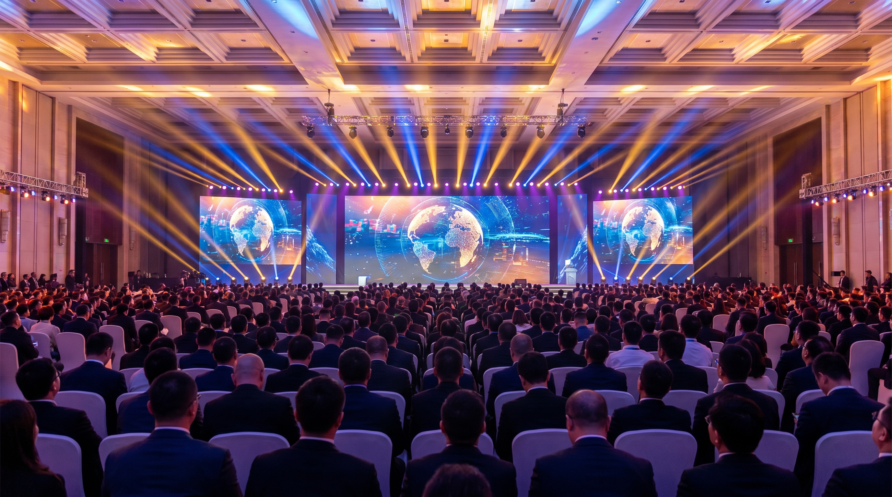

福岡市主催の国際カンファレンスで、福岡市長スピーチを含む複数セッションにFelo Subtitleを採用。高精度なAI同時通訳字幕により、海外ゲストとの双方向コミュニケーションを実現しました。会議での活用実績が評価され、現在は福岡空港・博多駅の観光案内所にもFelo Translatorを展開し、訪日観光客対応にも活用されています(株式会社QTnet経由で提供)。
詳しく見る →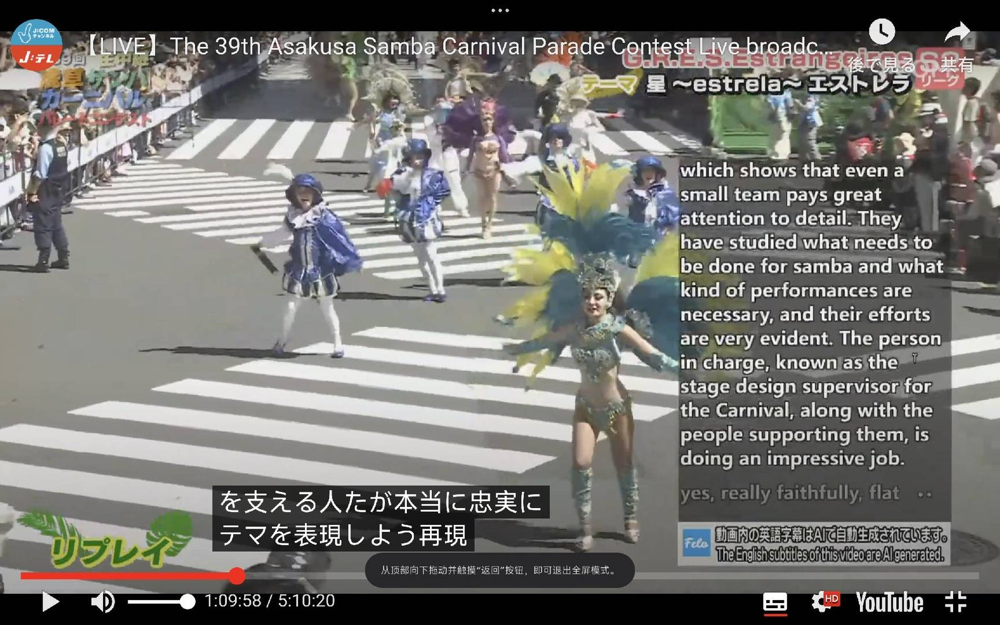
JCOM社「浅草サンバカーニバル」英語ライブ放送にて、Felo Subtitleをリアルタイム英語字幕生成ツールとして採用。日本の伝統文化イベントを世界中の視聴者に英語で発信する体制を実現し、字幕生成の人的コストを大幅に削減。国際向けライブ配信の標準ツールとして継続利用中です。
詳しく見る →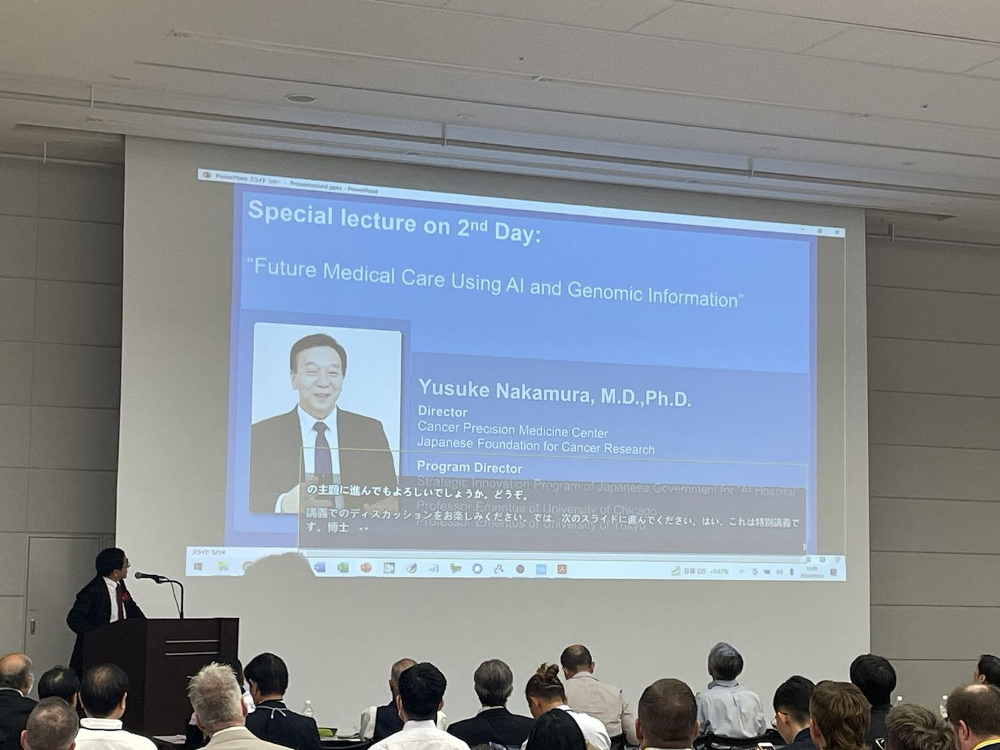
褥瘡・インシデント・ADL・ゲノム医療など高度な医療専門用語が多数登場する国際学会。AIとゲノム情報を用いた未来医療をテーマとする特別講演でも、専門用語辞書の事前登録により高精度な文字起こしと多言語翻訳を実現しました。「専門用語が多い研究会議でも、ほぼ正確に文字起こしできる」との評価をいただいています。
詳しく見る →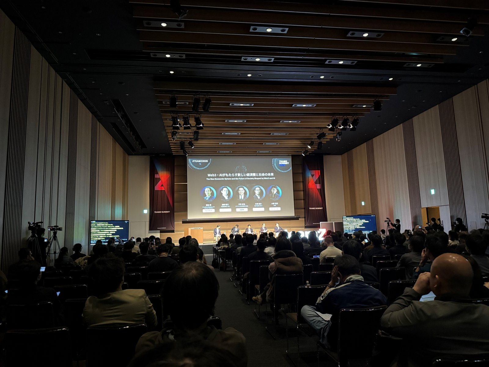
アジア最大級のブロックチェーン・Web3カンファレンスにて、複数セッションで同時通訳字幕を提供。日本語・英語・中国語・韓国語の4言語を同時処理し、グローバル参加者が母国語で最新技術トレンドを理解できる環境を構築。Web3・ブロックチェーン特有の専門用語にも対応しました。
詳しく見る →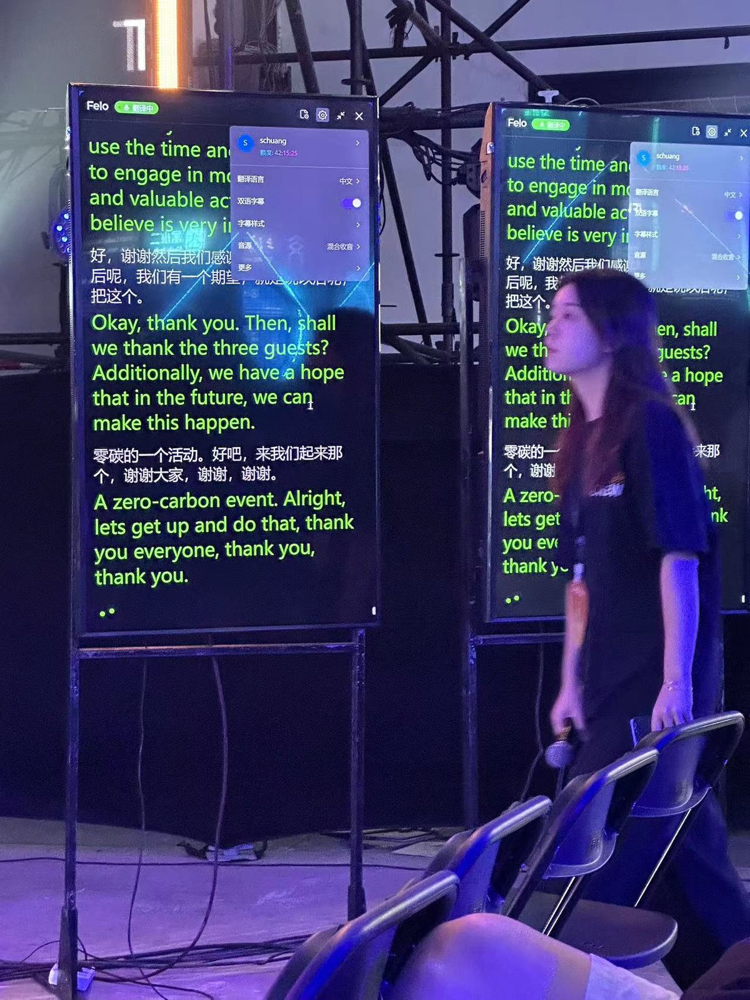
9月の上海会場(5会場同時開催)でFelo字幕を採用し、大型スクリーンに中英日多言語字幕を投影。好評により10月の北京会場でも継続採用され、S創オフィシャル翻訳ツールに認定。日中間の大規模スタートアップイベントにおける標準ツールとして定着しています。
詳しく見る →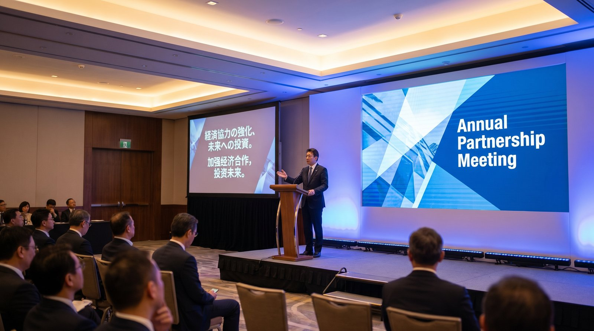
上海で開催された日中合同カンファレンスにて、日中・中日のリアルタイム翻訳ツールとして採用。大型スクリーンにリアルタイム字幕を投影し、現地参加者とオンライン参加者の双方向同時通訳を実現。翻訳精度満足度100%・同時通訳コスト80%削減を達成し、現在は日中間の社用ツールとして全社展開されています。
詳しく見る →Zoom、Microsoft Teams、Google Meet、Webex など主要なWeb会議プラットフォームに対応しています。追加インストール不要で、すぐに使い始められます。デスクトップ音声を直接キャプチャする独自方式のため、各プラットフォームのアップデートにも影響を受けにくい設計です。
従来の人の同時通訳に比べ、最大80%のコスト削減が可能です。通訳者の手配費用・待機費用が不要になり、定額サブスクリプションで回数制限なくご利用いただけます。月2回の国際会議なら年間180万円以上の削減実績があります。
はい、ボット不参加のプライベート翻訳モードに対応しています。会議にボットや不明なアカウントが表示されないため、経営会議やM&A協議など機密会議でも安心してご利用いただけます。
医療・法律・IT・製造・建設など業界特有の専門用語を事前登録できる専門用語辞書機能を搭載。社名・商品名・略語も正確に翻訳され、業界会議・技術セッションでも誤訳を最小化します。
貴社の国際会議での活用方法を、具体的にご提案します。